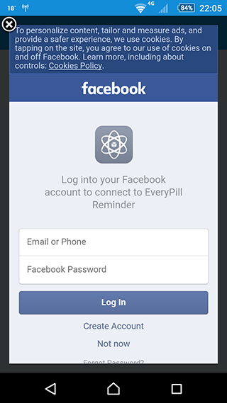

Sign in
When you sign in to EveryPill Reminder using your Google or Facebook account, this ensures that your information will be saved. So, if you need to access EveryPill Reminder from another device, or even if you reinstall it, all your information will always be there - ready to be used!
It's possible to log in as a Guest, but in this case, if you change device or if you reinstall the App all your data will be lost.
Important notes
Facebook and Google are different accounts
Facebook and Google are different accounts, and the App treats them as such, even if your Facebook is associated to your Google email.
If you have both Google and Facebook, we advise you to choose one of them to use with EveryPill Reminder.
All information that you add (medication, friends, etc.) is associated to the account that you used to log in to the App.
So, for example, you sign in with Google and add a medication. Then you sign out, and sign in again, but this time with Facebook.
In this case, you won't be able to access the medication and friends that you previously added with Google, even if your Facebook email is your Google email!
Facebook App is not installed on the smartphone
If you have a Facebook account but Facebook App is not installed on the smartphone, when you try to sign in to EveryPill Reminder with Facebook you will see the default Facebook screen to login to the application.

In this case, input your Facebook information and proceed with the login.
If it's not the first time that you log in to EveryPill Reminder with Facebook using the login screen, you'll see a message:
"You previously logged in to EveryPill Reminder with Facebook. Would you like to continue?"
In this case, tap Continue to access EveryPill Reminder.